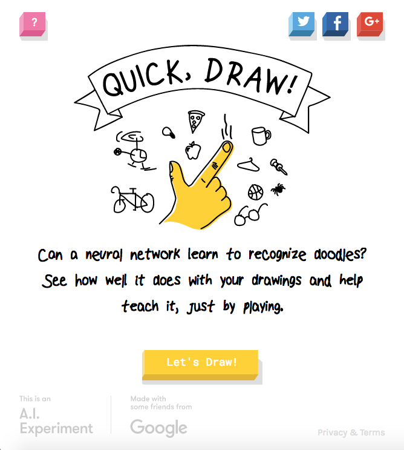

Hello World
CodeTengu Weekly 碼天狗週刊
CodeTengu Weekly 會在 GMT+8 時區的每個禮拜一早上 10:00 出刊，每一期會從目前的 curator 名單中選出三位來負責當期的內容，每個 curator 各自負責不同的領域。如果你在這一期沒有看到自已感興趣的東西，說不定下一期就會有了。你也可以瀏覽一下前幾期的內容。
以下是目前的 curator 陣容：
- @vinta - I failed the Turing Test - 科幻迷。最近在讀 More Than Human
- @saiday - Imnotyourson - 買了文明帝國 6
- @tzangms - Oceanic / 人生海海 - 衝動型購物
- @fukuball - ImFukuball - 婚後生活
- @mingderwang - Ethereum enthusiast
- @kako0507 - 熱愛嘗試新事物的前端工程師
- @chiahsien - 我們在找 iOS 工程師與其它人才，歡迎來跟我當同事
- @hiroshiyui - 沒有人是一座孤島
- @uranusjr - Smaller Things - 不愛談技術的技術人，最近對做菜很有興趣
- @kkdai - 態度萬歲 - 喜歡 Golang 的略懂工程師
- @yhsiang
大家也可以關注我們的 Facebook、Twitter、GitHub 或微博，有很多 Weekly 看不到的內容。有任何建議或疑問也可以來 Gitter 聊聊，歡迎亂入。
 @fukuball
@fukuball
林軒田教授機器學習技法 Machine Learning Techniques 第 6 講學習筆記
Machine Learning：中級
在上一講中，我們了解了如何使用 SVM 來解 Logistic Regression 的問題，一個是使用 SVM 做轉換的 Probabilistic SVM，一個是使用 SVM Kernel Trick 所啟發的 Kernel Logistic Regression。這一講我們將繼續介紹如何延伸到解 Regression 的問題。
20 Weird & Wonderful Datasets for Machine Learning - 20 個有趣的機器學習資料集
Machine Learning：初級
大家都在講 Data Science、Machine Learning，但談這些之前有一個最重要的一環就是 Datasets，本篇文章分享了一些有趣的 Datasets 連結，沒想到居然還有 UFO 目擊報告的資料集！
說到 Datasets，幾乎沒有看到台灣的軟體公司或是開發者在 Datasets 這一塊有開源貢獻，所以敝公司 iNDIEVOX 近期拋磚引玉開源了 iNDIEVOX Datasets！這些 Datasets 可以做到 iNDIEVOX 的 Valence Arousal DJ Radio、Emotion Radio、Buy Together 等功能喔！至於怎麼做，大家可以自己摸索看看，當然也可以想想看可以用這些資料做出什麼其他有趣功能，這就是開源好玩的地方～ 如果有做出什麼有趣的實驗，也請告訴我們、分享一下喔！
Top-down learning path: Machine Learning for Software Engineers - 給軟體工程師的機器學習手冊
Machine Learning：初級
這是一位 Mobile Developer 為了轉職學習 Machine Learning 而整理的學習筆記，學習資源真的很豐富，全部看完應該會不得了！其中我覺得「Don't feel you aren't smart enough」這一點真的蠻重要的，盡量去學學看、做做看吧！
The Non-Technical Guide to Machine Learning & Artificial Intelligence - 給非技術人員的機器學習/人工智慧指南
Machine Learning：初級
雖說是給非技術人員的機器學習/人工智慧指南，但很多資源對技術人員也是很有幫助的，文中的 News Sources 有蠻多其實說不定要懂技術才看得懂，例如：Google Research Blog、Deep Mind Blog 等等，而介紹搞機器學習/人工智慧的 Startups 也很有用，可以大概了解一下目前產業在機器學習的應用上會在哪些方向。
PHPConf 2016 筆記
PHP：初級
PHPConf 2016 在十月底已經落幕了，今年由於一些私事沒辦法參與（感謝 @shengyou 邀請參與 QA Track 會談人），只好在網路上找相關筆記來了解一下今年的會議內容，今年請了 Modern PHP 作者 Josh Lockhart 及 PHPUnit 測試框架作者 Sebastian Bergmann 來分享演講，現場應該很精采吧～
 @mingderwang
@mingderwang
All you need to know about Elasticsearch 5.0: Index management
如果你還沒用過 ELK，你可以就從最新的 5.0 版開始安裝和使用。新的 Elasticsearch 5.0 幾週前正式 released，它讓一個開放軟體成功轉變成商用版來運行。也就是說，不想一而再，再而三更新版本的人，現在可以正式開始使用了。但相反的，也開始會收商用版的 license 費用 (如果你願意付的話)。如果你想知道 Elasticsearch 5.0 有什麼新功能，All you need to know about Elasticsearch 5.0: Search。它主要功能還是在幫你做全文檢索的 indices，所以本篇文章介紹一些技巧和 indices 的種類，如果有興趣研究的可以參考。
Using Kubernetes Minikube for Local test deployments
kuberenetes cluster 有點難設定，如果不是 production 用，可以改用 minikube 安裝單機版 kubernetes。本篇文章教你很快架設測試或教學用的 kubernetes 環境。如果還缺少 kubectl 指令，可以參考 here 或 Setting up kubectl 安裝。
安裝好了 minikube， 你可以拿 nsolid-kubernetes 原始碼來試試看。
Running a Parity Ethereum node in Docker and connect safely
如果你想學 Solidity 語言，這個影片由 Ethereum 發明人 Vitalik Buterin 親自在 Taipei Ethereum Meetup 教我們如何用 Solidity 語言撰寫智能合約與除錯技巧。但撰寫智能合約與開發一般電腦語言程式，最大不同之處，在於你要先有一個 Ethereum 帳號，以及一個電子錢包，每次執行一個合約，即使是測試你的程式對不對，都要定義你的 gas price，且告知你想花多少 gas 來執行你的程式。
這篇文章，就是介紹你如何用 Docker 開一個 Ethereum 電子錢包，以確保你開的帳戶和使用電子錢包匯錢時，是比較安全的。最後你只要在 browser-solidity 上撰寫以及編譯程式，再 cut and paste 到電子錢包裡執行就好。對了，錢包裡還沒有半毛錢，是無法轉換成 gas 來執行你的程式，快到全家便利商店，買一點比特幣換成 Ether 匯到你剛開好的帳戶即可。
docker pull ethcore/parity:beta-release
 @chiahsien
@chiahsien
Understanding code signing for iOS apps
Code signing 應該是絕大多數蘋果開發者心中的痛，無論是對老手或新手都是。就算最新的 Xcode 在這方面已經有所改善，搞懂 code signing 仍舊是開發者必備知識之一。這篇文章以深入淺出的方式，解釋 code signing 的原理以及每個步驟代表的意義，讀懂之後就會有種豁然開朗的感覺。
Xcake: Describe and generate Xcode projects in a human readable format.
如果你們的 iOS 開發團隊稍具規模，一定曾經發生過多條 branch 同時進行，最後要 merge 回去時發現 Xcode Project 檔產生衝突無法自動合併，或是能夠合併但結果卻不是完全正確。
我曾經施行了以下方法來避免這個情況發生：
- 排序 project file 裡頭的檔案
- 使用 union 的合併策略
- 要求工程師先 rebase 再 merge
理論上來說這三點應該可以避免 conflict 產生了，不過最後一點實在是太難達成，所以...你懂的 :(
因此最近我在嘗試另一個解決辦法：不要提交 project file 就不會衝突了。在研究過一些工具像是 Facebook - Buck 跟 GYP - Generate Your Projects 之後，我最後選擇了 Xcake 這個比較輕量化的工具。
它有以下優點：
- 可讀性高的設定檔
- 可設定 Build Settings 的各個設定
- 可設定 Build Phases 的 scripts
- 根據檔案的目錄架構產生對應的 Group，如果你的檔案原本都丟在同一個目錄下，建議可以先用 synx 整理一下
- 作者回應非常快速，也是因為這個原因，所以我願意使用它
PPTs for iDEV 2016
前一陣子在中國大陸舉辦的 iDev 全平台開發者大會 落幕了，這個活動主要面向 iOS、Mac OS 以及相關生態鏈的開發者。最近它們釋出了每個講者的投影片，大家可以找自己感興趣的議題研究研究。
Dash for iOS
經過了一連串的事件（1, 2, 3）之後，作者最後決定要開源 Dash for iOS 了。是說我還想不到要在手機上查看 API 文件的理由啦，不過有需要的人可以去下載原始碼然後編譯到自己手機上了，或是你單純只想要看看人家是如何開發的，這也是一個很好的學習機會。
不過話說回來，透過閱讀它的程式碼就會發現，一個軟體是否成功跟程式碼寫得好不好，其實沒有直接關係 XD
katana-swift
Katana 是一個最近推出的 framework，它受到 React 跟 Redux 的啟發，類似的東西還有 ReSwift。假如你的軟體達到了一定的複雜度，的確可以試試看這些做法，它會讓程式架構更好維護、程式碼更穩定，但如果你的軟體一點都不複雜，那還是乖乖地用 MVC 架構就好了。
延伸閱讀：
工作機會
Python Web Developer at StreetVoice
開發與維護 StreetVoice 旗下相關網站，開發流程包含 Code Review、CI 與自動化部署，團隊內有專職的 DevOps 和前端工程師。主要技術棧：Python、Django、MySQL (MariaDB)、Redis、Elasticsearch、Ansible 和 AWS。
意者歡迎來信：tzangms@streetvoice.com。
Random Cool Stuff

Quick, Draw! Google AI Experiments - 你畫我猜實驗應用程式
Google AI Experiments 推出的你畫我猜實驗小遊戲，使用 neural network 訓練機器學習辨識手繪塗鴉，辨識率非常高！不過在幫大家辨識塗鴉時，其實大家也一邊在幫 Google 餵訓練資料，未來辨識率會越來越高吧！Google 要慢慢用 AI 統治世界了嗎？
由 @fukuball 分享。